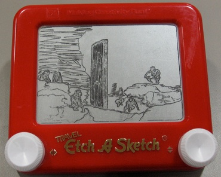

Inglorious Mono


Inglorious Mono (some of the worst “Jazz” you will ever hear)
Jazzomics - Inglorious mono
Jazz - made by devolved science apes from MPI-CBG / BIOZ etc. Dresden, Germany.
Below: “Jazzomics- Inglorious Mono” 1st Aug 2007. Jazztronics: Piano, bass, drums, guitar, trombone etc. recorded on mini disk, compressed to mp3, website in iWeb.
Left: The apes and the Monolith from 2001: A Space Odyssey (dir. Stanley Kubrick), on Etch-a-Sketch,